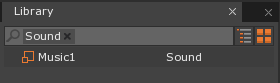

Audio
This lesson covers importing sound files, playing music and sound effects, persistent objects that are not destroyed in-between level loading/changing, and positional sound.
Create a New Project
Level Setup
- Command:
CreateSpriteor - In the Properties Window
- Add a RigidBody Component
- Under Transform
- Set Translation to:
[5, 0, 0]
- Set Translation to:
- Under Sprite
- Set SpriteSource to:
Circle
- Set SpriteSource to:
- Command:
CreateSpriteor - In the Properties Window
- Set Name to:
BackgroundMusic
- Set Name to:
Sound Emitters
Add a SoundEmitter component to the BackgroundMusic object
The SoundEmitter component emits sound at its location. It gives you the option of choosing whether or not to apply the positional effects to the sound.
Here is how the level should look after our initial setup:
The Circle sprite should fall because it has a RigidBody being affected by gravity.
- Stop the Game
- Select the BackgroundMusic object
- In the Properties Window
- Under SoundEmitter
- Set StartPlaying to:
True
- Set StartPlaying to:
- Under SoundEmitter
- Save the project and run the game
The DefaultSound that comes with the Zero Engine should play as soon as the level starts.
Volume
The SoundEmitter has a Volume property that allows you to choose the percentage of the sound’s volume that should be used when the sound is played. In other words, if the SoundEmitter’s Volume is 1.0, then 100% of the sound file’s volume will be used when the sound is played, and if it’s 0.5 then 50% of the actual sound file’s volume will be used when the sound is played.
- Stop the Game
- In the Properties Window
- Under SoundEmitter
- Set Volume to:
0.25
- Set Volume to:
- Under SoundEmitter
- Save the project and run the game
The DefaultCue is now played by the SoundEmitter at ¼ or 25% of the actual volume.
Pitch
- Stop the Game
- In the Properties Window
- Under SoundEmitter
- Set Volume to:
1.0 - Set Pitch to:
4.0
- Set Volume to:
- Under SoundEmitter
The pitch is how high or low it will sound when you hear it. This is not the same as volume. Pitch is related to the frequency of the sound. A higher frequency means a higher pitch.
Notice the effects of the higher pitch.
- Stop the Game
- In the Properties Window
- Under SoundEmitter
- Set Pitch to:
0.5
- Set Pitch to:
- Under SoundEmitter
- Save the project and run the game
Notice the effects of the lower pitch. We have been using the default SoundCue, DefaultCue. Now we will create our own SoundCue so that we can do more.
Adding a SoundCue Resource
Add a new SoundCue resource named:
Music1
Our new SoundCue is displayed in the Properties Window:

There is currently no Sound added to the Music1 SoundCue that we just created.
- In the Properties Window
- Under Sounds
Left Clickthe Add SoundEntry... area
- Under Sounds
The DefaultSound is now added to the Music1 SoundCue. Not only do we have our own version of the DefaultCue, but we now have access to more properties to specify how the sound will be played.
In the Properties Window
Under SoundEmitter
Set Cue to:
Music1Set Pitch to:
1
Left Clickon the to the right of Music1
In the Properties Window
Set PlayMode to:
Looping
The sound is now looping, so it gets played repeatedly as soon as it finishes.
Adding a Sound Resource
Now lets add some sound files.
Download the Sounds for this lesson
- Import the provided Sound resource named:
Music1.wav
The new Sound is added to the Library Window under the Sound tag.

The Sound resource is not the same as the SoundCue resource. The Sound resource refers to the sound file, while the SoundCue refers to the presets that determine how a sound file is played.
- In the Library Window
- Under the SoundCue tag
Double Left ClickMusic1
- Under the SoundCue tag
In the Properties Window
Under Sounds
Under Sound: DefaultSound
Set Sound to:
Music1
The Music1 Sound we just added to the project is now being played instead of the DefaultSound. We now have background music.
Importing Multiple Sound Files with Drag and Drop
- Make sure the Level Window is visible
- Drag and Drop the following files from the same folder where Music1 was located (not in the editor but from your computer) onto the Level Window:
- Music2.wav
- CoinPickup.wav
- ScoreV2.wav
The following window should appear:
This convenient feature allows us to specify import options for the group of files. There is an option that allows us to tell the Zero Engine to create a Cue for each Sound file automatically.
In the Group Import Options Window
Under AudioOptions
Set GenerateCue to:
PerSound
Left Clickthe Import All button
The Sound files have been imported and each has a corresponding SoundCue.
Pausing Sound in Code
- Add a new ZilchScript resource named:
GameLogic - In the GameLogic script
- Update the GameLogic class with the following code:
class GameLogic : ZilchComponent
{
function Initialize(init : CogInitializer)
{
// Receive Keyboard events:
Zero.Connect(Zero.Keyboard, Events.KeyUp, this.OnKeyUp);
}
function OnKeyUp(event : KeyboardEvent)
{
// Pause/Resume all sounds in the space:
if (event.Key == Keys.Space)
{
this.Space.SoundSpace.Pause = !this.Space.SoundSpace.Pause;
}
}
}
The Space has SoundSpace component attached to it that provides sound for the Space.
The SoundSpace component allows us to set the pitch scale and volume for all sounds in the Space. We are also able to pause/resume all sounds playing in the Space by setting the SoundSpace.Pause bool to True or False.
- Select the LevelSettings object
- In the Properties Window
Pressing Space on the keyboard allows us to pause/resume all sounds playing in the Space. Notice how the music resumes right where it left off. Keep in mind that this only affects sound.
- Stop the Game
- In the GameLogic script
- Update the GameLogic‘s OnKeyUp function with the following code:
function OnKeyUp(event : KeyboardEvent)
{
// Pause/Resume all sounds in the space:
if (event.Key == Keys.Space)
{
this.Space.SoundSpace.Pause = !this.Space.SoundSpace.Pause;
}
// Restart the level
if (event.Key == Keys.R)
{
this.Space.ReloadLevel();
}
}
Now the music plays, and the level is reloaded when we press the R key on the keyboard. Notice how the music restarts every time we reload the level. What if we wanted the music to continue playing throughout multiple levels and when the level is reloaded?
Continue Playing Sounds In-Between Levels
- In the GameLogic script
- Update GameLogic ‘s class member variables with the following code:
class GameLogic : ZilchComponent
{
var BackgroundMusicObject : Cog = null;
- Update the GameLogic‘s Initialize function with the following code:
function Initialize(init : CogInitializer)
{
// Receive Keyboard events:
Zero.Connect(Zero.Keyboard, Events.KeyUp, this.OnKeyUp);
this.BackgroundMusicObject = this.Space.FindObjectByName("BackgroundMusic");
// If the there is background music
if(this.BackgroundMusicObject != null)
{
// Make it persist
this.BackgroundMusicObject.Persistent = true;
}
}
In this code we are setting the Cog’s Persistent member on the BackgroundMusic object to True. This prevents the object from being destroyed when a level is loaded/reloaded. After calling this function, we will have to manually set the Persistent Cog member to False later on in order to allow it to be destroyed as it normally would be.
Pressing the R key on the keyboard will reload the level and the music will continue playing because the BackgroundMusic object was never destroyed,
but observe what happens when the R key is repeatedly pressed. The music is still
playing, and there are multiple
instances of the music playing at the same time. This is because the Background object is still being created every time the level is loaded.
In the Properties Window
Set Archetype to: BackgroundMusic
- Under SoundEmitter
- Set StartPlaying to: False
- Under SoundEmitter
We will play the sound manually from in code. *
- Set Positional to:
False
We don’t need positional sound because it’s background music.
- Upload the archetype by clicking the
 button
button
- Upload the archetype by clicking the
The BackgroundMusic archetype should appear under the Archetype tag in the Library Window.
In the Objects Window
Right Clickon BackgroundMusicLeft Clickthe Delete option
We will create the BackgroundMusic object in code by using the BackgroundMusic archetype. This gives us the ability to not create it if it already exists in the level.
- In the GameLogic script
- Update the GameLogic‘s Initialize function with the following code:
function Initialize(init : CogInitializer)
{
// Receive Keyboard events:
Zero.Connect(Zero.Keyboard, Events.KeyUp, this.OnKeyUp);
this.BackgroundMusicObject = this.Space.FindObjectByName("BackgroundMusic");
// If the there is no background music
if(this.BackgroundMusicObject == null)
{
// Make some and
this.BackgroundMusicObject = this.Space.Create(Archetype.Find("BackgroundMusic"));
// Make it persist
this.BackgroundMusicObject.Persistent = true;
}
// If we are not yet playing the music
if (this.BackgroundMusicObject.SoundEmitter.IsPlaying() == false)
{
// Get the music playing
this.BackgroundMusicObject.SoundEmitter.Play();
}
}
We search for the BackgroundMusic object, and if it wasn’t found, then we create it from the archetype. After that, the BackgroundMusic object should exist, so we manually play the current SoundCue on the SoundEmitter, but we only play it if it is not already playing.
The music plays because the BackgroundMusic object is created by the GameLogic script. Pressing the R key on the keyboard will reload the level, but the music continues playing.
Playing Different SoundCues from a Sound Emitter in Code
The SoundEmitter component has a member function called PlayCue that accepts the SoundCue resource that you wish to play. We can also stop a sound that is playing by using the SoundEmitter’s Stop member function.
- Stop the Game
- In the GameLogic script
- Update the GameLogic class with the following code:
- Update the GameLogic‘s OnKeyUp function with the following code:
- Update the GameLogic class with the following code:
function OnKeyUp(event : KeyboardEvent)
{
// Pause/Resume all sounds in the space:
if (event.Key == Keys.Space)
{
this.Space.SoundSpace.Pause = !this.Space.SoundSpace.Pause;
}
// Restart the level
if (event.Key == Keys.R)
{
this.Space.ReloadLevel();
}
// Change background music
if (event.Key == Keys.Right)
{
// Stop the Current Music
this.BackgroundMusicObject.SoundEmitter.Stop();
// Play Music2
this.BackgroundMusicObject.SoundEmitter.PlayCue(SoundCue.Find("Music2"));
}
}
This code stops the current SoundCue on the SoundEmitter and Plays the Music2 SoundCue from the BackgroundMusic object’s SoundEmitter.
Now if the Right arrow key is pressed on the keyboard, the Music1 SoundCue stops the Music1 Sound and the Music2 SoundCue plays the Music2 Sound from the BackgroundMusic object’s SoundEmitter.
Playing Sound Effects
So far, we have been playing music from the SoundEmitter component. Now we will go over playing sound effects and positional sound effects.
- Stop the Game
- In the GameLogic script
- Update the GameLogic class with the following code:
- Update the GameLogic‘s OnKeyUp function with the following code:
- Update the GameLogic class with the following code:
if (event.Key == Keys.Up)
{
this.Space.SoundSpace.PlayCue(SoundCue.Find("CoinPickup"));
}
if (event.Key == Keys.Down)
{
this.Space.SoundSpace.PlayCue(SoundCue.Find("ScoreV2"));
}
This code uses the SoundSpace’s PlayCue member function to play SoundCues.
The CoinPickup Sound plays when the Up arrow key is pressed and the ScoreV2 Sound plays when the Down arrow key is pressed. An object with a SoundEmitter component could do the same thing. In addition to that, the object with some position in the world could play the Sounds with positional properties that take the distance into account so that sound far away sounds aren’t as loud as sounds that are closer.
Microphones
Positional sounds require a Microphone component to be attached to an object located somewhere in the level in order to be heard. This mimics a person (such as the player) not being able to hear a sound from location that is very far from his or her location in the level. If there are no objects with microphone components in the level, then there will be an internal microphone used that is located at the origin (the [0,0,0] position). If we had a Player object and we wanted the player to hear sounds with distance taken into account as a person would in real-life, we would simply give that object a Microphone component.
Command:
CreateSpriteorIn the Properties Window
Set Name to:
PlayerUnder Transform
- Set Translation to:
[0,-50,0]
- Set Translation to:
Under Sprite
Set Color to:
[R: 255, G: 0, B: 128, A: 1.0],#FF0080-
In the Properties Window
- Add a SoundEmitter Component
- Under SoundEmitter
- Set StartPlaying to:
True Left Clickon the right of DefaultCue
- Set StartPlaying to:
In the Properties Window
- Set PlayMode to:
Looping
- Set PlayMode to:
-
- Under Camera
- Set Size to:
101
- Set Size to:
- Under Camera
Here is what the Level looks like:
{kind=link}
Because the Player object has the Microphone component and its position is [0,-50, 0], the looping music gets loudest when the sprite it is attached to gets closest to the player. The pitch change is from the Doppler effect, a physics phenomenon in which the perceived frequency (i.e. pitch) compresses or expands (gets higher or lower pitched) based on the changes of relative distance between the sound emitter and receiver.
Now we know how to import sound files, play music and sound effects, play music in-between levels, pause music, and use positional sounds.